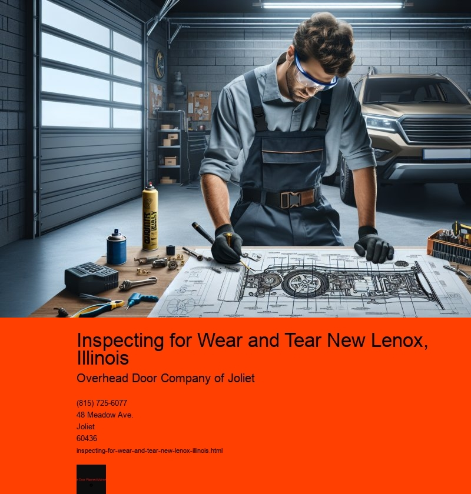

Inspecting for wear and tear is a crucial practice that residents and businesses in New Lenox, Illinois, should adopt to ensure the longevity and safety of their properties and belongings. Nestled in Will County, New Lenox is a community that values quality living and meticulous upkeep. From residential homes to commercial establishments, wear and tear are inevitable consequences of time and use. However, with regular inspections and maintenance, the impact of wear and tear can be mitigated, preserving the aesthetic and functional aspects of various properties and items.
The concept of wear and tear encompasses the gradual degradation or damage that occurs naturally over time. For homeowners in New Lenox, this could mean anything from the fading of exterior paint due to harsh weather conditions to the wearing down of flooring materials under constant foot traffic. Similarly, businesses in the area might witness the depreciation of machinery or office furniture. Addressing these signs early through regular inspections can prevent minor issues from escalating into significant problems that require costly repairs or replacements.
One of the primary reasons for conducting wear and tear inspections is safety. In residential settings, for example, ensuring that electrical systems, plumbing, and structural components like roofs and foundations are in good condition is paramount. A small leak or a compromised electrical wire might seem insignificant initially but can lead to severe consequences if left unaddressed. Inspections allow homeowners to identify such issues promptly, ensuring that their families remain safe and comfortable.
For businesses, regular inspections serve a dual purpose of maintaining safety and ensuring operational efficiency. Equipment that is not routinely checked for wear and tear might malfunction, leading to potential hazards for employees and disruptions in service delivery. By conducting regular inspections, businesses can maintain a safe working environment and avoid unexpected downtimes that might affect productivity and profitability.
The economic aspect of inspecting for wear and tear is also significant. Property values in New Lenox are influenced by the condition of homes and commercial spaces. Regular maintenance and timely repairs not only preserve the aesthetic appeal of a property but also enhance its market value. Potential buyers are more likely to invest in properties that have been well-maintained, perceiving them as less risky and more cost-effective in the long run.
Moreover, inspecting for wear and tear aligns with the growing trend of sustainability and responsible resource management. By regularly maintaining and repairing items, residents and businesses can extend their lifespan, reducing the need for new purchases and minimizing waste. This practice not only benefits individual property owners but also contributes to the broader environmental goals of reducing resource consumption and waste generation.
In conclusion, inspecting for wear and tear is a practice that should be embraced by everyone in New Lenox, Illinois. It is a proactive measure that ensures safety, preserves property value, enhances operational efficiency, and supports sustainability efforts. Whether it is a homeowner checking the integrity of their roof or a business owner ensuring the functionality of their equipment, regular inspections are an investment in the future. By prioritizing this practice, the community of New Lenox can continue to thrive, maintaining its reputation as a desirable place to live and work.
Replacing Worn-Out Springs New Lenox, Illinois
